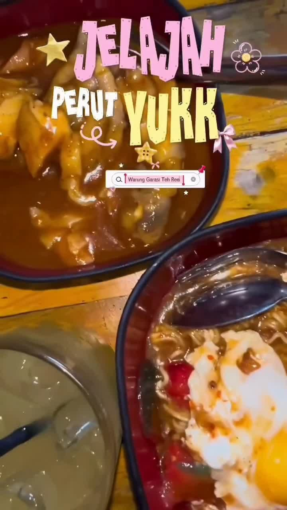
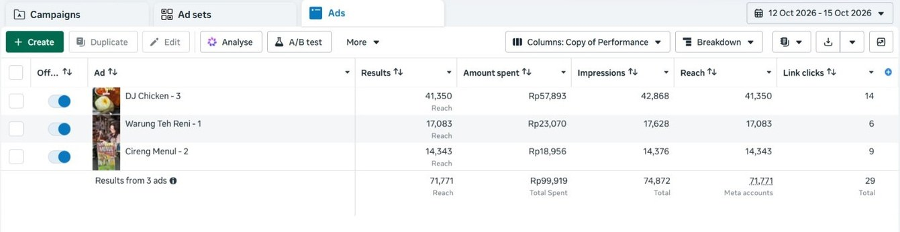
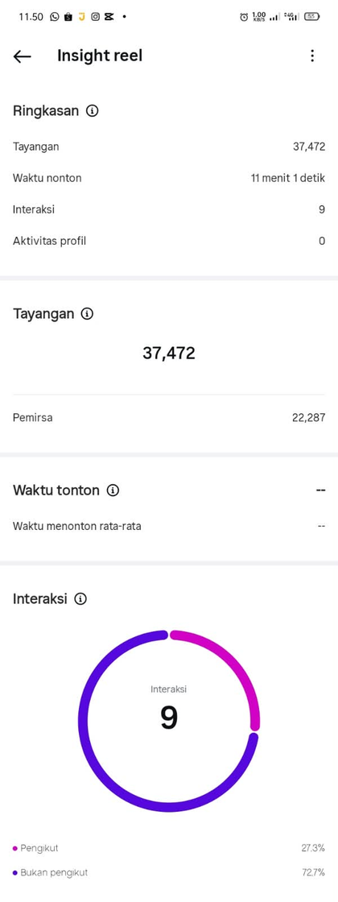
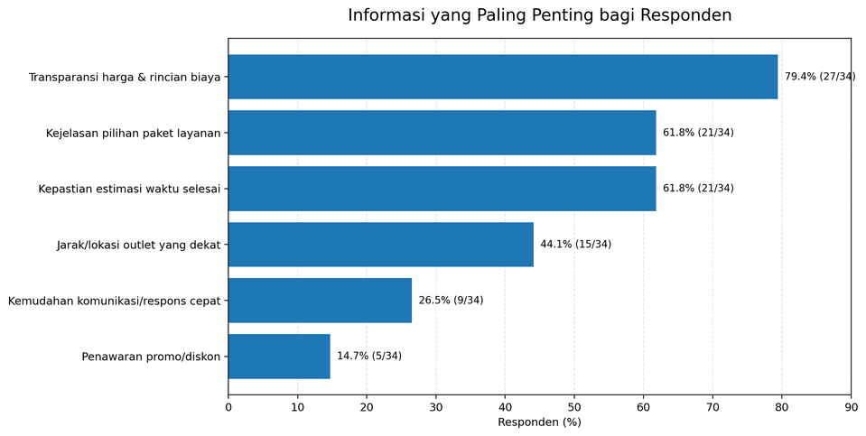
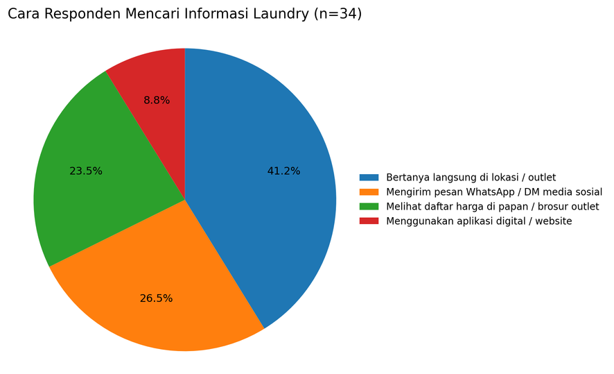

Marketplace Ads Management
Mengelola iklan dan campaign di Shopee, Lazada, dan TikTok Shop.
Digital Marketing Portfolio 2026
Mahasiswa S1 Bisnis Digital dengan pengalaman sebagai Admin Marketplace.
Tentang Saya
Selain pengalaman kerja, saya juga terlibat dalam berbagai proyek akademik yang berkaitan dengan digital marketing dan pengembangan konsep produk digital. Pengalaman ini membantu saya memahami proses perencanaan, pelaksanaan, hingga evaluasi dalam sebuah proyek.
Fokus Karier
Saya tertarik mengembangkan karier di bidang digital marketing, khususnya dalam perencanaan dan pelaksanaan strategi digital. Saya juga terbuka untuk mempelajari pengembangan produk digital guna memperluas pemahaman serta kemampuan saya.
Campaign planning & performance evaluation
User research & website concept development
Karya Pilihan
Studi Kasus 01
Pengalaman mengelola iklan dan campaign pada marketplace.
Pengelolaan iklan produk di Shopee serta campaign di Shopee, Lazada, dan TikTok Shop untuk mendukung peningkatan dan stabilitas penjualan. Pengelolaan iklan mencakup pemilihan produk berdasarkan tren fashion, pemantauan performa melalui ROAS, penjualan, dan jangkauan produk, serta evaluasi strategi dan alokasi anggaran iklan.
Menentukan prioritas produk dan alokasi anggaran untuk meningkatkan exposure melalui iklan.
Memantau ROAS dan penjualan untuk mengevaluasi efektivitas iklan serta menentukan penyesuaian strategi.
Menyesuaikan anggaran berdasarkan performa dan potensi masing-masing produk.
Mengelola campaign promosi di marketplace untuk mendukung visibilitas dan penjualan produk.
Melalui pengelolaan iklan dan campaign marketplace, saya memperoleh pengalaman dalam memantau performa iklan, menyesuaikan anggaran, dan mengevaluasi strategi promosi. Pengalaman ini juga membantu saya memahami bahwa performa penjualan perlu dilihat dari berbagai faktor, termasuk kondisi produk dan kegiatan promosi.
Marketplace Ads Optimization — Case Study: ROAS Improvement
Dalam mengoptimalkan performa iklan, evaluasi dilakukan berdasarkan ROAS aktual, kondisi produk, rating, ulasan pelanggan, serta momentum campaign. Hasil evaluasi menjadi dasar penyesuaian target ROAS dan aktivitas promosi.
Melalui proses tersebut, ROAS aktual produk yang sebelumnya berada di bawah batas minimum berhasil mencapai target yang ditetapkan.
Proyek 01
Sosial Media Content & Digital Advertising
Jelajah Perut merupakan proyek pengembangan brand konten kuliner yang mengangkat ulasan makanan dan promosi UMKM melalui media sosial.
Mengumpulkan informasi tentang restoran sebagai dasar penyusunan konten.
Menyusun arahan footage dan informasi yang perlu disampaikan dalam video.
Mengembangkan konten review makanan untuk meningkatkan awareness akun JelajahPerut dan menarik lebih banyak views.
Penyesuaian video agar lebih ringkas dan terstruktur.
Penyesuaian durasi dan penyusunan ulang klip agar video lebih ringkas dan terstruktur.
Penambahan voice-over untuk membantu penyampaian informasi dalam video.

Kolaborasi tim dalam menjalankan kampanye iklan melalui Instagram dan Facebook menggunakan tiga video terpilih untuk meningkatkan awareness akun JelajahPerut.


Metrik
Proyek 02
Website Concept & Promotional Design
LaundryAku merupakan proyek kelompok yang berfokus pada pengembangan konsep website layanan laundry dan pembuatan konten promosi. Proyek ini mencakup perencanaan fitur pelacakan status laundry untuk membantu pelanggan mengetahui proses pengerjaan laundry mereka.
Mengembangkan konsep website layanan laundry untuk memudahkan pelanggan mengakses informasi layanan.
Fitur pelacakan status laundry direncanakan agar pelanggan dapat mengetahui proses pengerjaan cucian.
Berkontribusi dalam diskusi kelompok untuk menyusun dan menyempurnakan brief sebagai panduan awal pengembangan website.
Perancangan website LaundryAku berangkat dari kebutuhan untuk menyediakan informasi layanan laundry dan memudahkan pelanggan memantau status cucian. Hal ini menjadi fokus pembahasan dalam penyusunan brief sebagai panduan awal pengembangan konsep website.
Kuesioner disusun bersama anggota kelompok untuk mengetahui kebutuhan dan kebiasaan pengguna dalam mencari informasi laundry. Hasilnya digunakan sebagai bahan pertimbangan dalam pengembangan konsep website LaundryAku.


Hasil kuesioner menjadi dasar pertimbangan dalam merancang website LaundryAku, khususnya fitur tracking status laundry. Fitur ini dirancang untuk memudahkan pelanggan memantau proses pengerjaan cucian tanpa harus menghubungi admin melalui WhatsApp.
Social Media Content: desain konten promosi.
Bersama anggota kelompok, saya turut merancang konten promosi untuk memperkenalkan LaundryAku dan menyampaikan informasi layanan kepada calon pengguna.
Terima kasih telah melihat portofolio saya